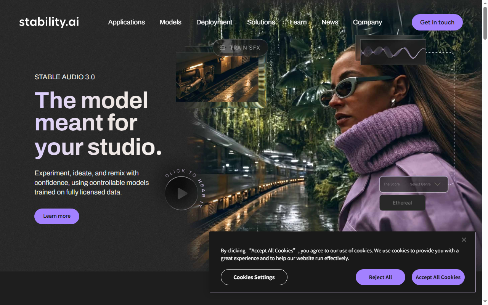

🏆 Quick Verdict
THE SHORT ANSWER
Midjourney wins on image quality and aesthetic appeal — its images are consistently more "beautiful" and production-ready out of the box. Stable Diffusion wins on control, customization, and cost — it's free, open-source, and infinitely extensible with LoRAs, ControlNet, and custom models.
Midjourney
Image Quality
Stable Diffusion
Flexibility & Control
But the real answer isn't that simple. These two tools serve fundamentally different users, and the "winner" depends entirely on what you're trying to create and how much control you need. Let's break it down.
📊 At a Glance: Spec Comparison
| Feature | Midjourney V7 | Stable Diffusion SD3.5 |
|---|---|---|
| Pricing | $10–$120/month | Free (open-source) |
| Access | Discord + Web app | Local install + Web UIs + APIs |
| Image Resolution | Up to 2048×2048 (native) | Up to 1024×1024 (base model) |
| Photorealism | Excellent — often indistinguishable from photos | Very good — but requires prompt tuning |
| Artistic Style | Superior — consistently aesthetic output | Good — highly dependent on model choice |
| Custom Models | Limited (style references only) | Unlimited — LoRA, Dreambooth, fine-tuning |
| Control & Precision | Moderate (inpainting, ref images) | Excellent — ControlNet, IP-Adapter, img2img |
| Text Rendering | Good — V7 significantly improved | Moderate — still struggles with text |
| NSFW / Unrestricted | No — strict content policy | Yes — fully uncensored locally |
| Generation Speed | ~15–60 seconds | ~2–15 seconds (GPU-dependent) |
| Batch Generation | 4 images per prompt | Unlimited (API/script-based) |
| Best For | Designers, artists, marketers | Developers, researchers, tinkerers |
🎨 Image Quality: Side-by-Side Comparison
We tested both tools with identical prompts across 6 categories. Here's what we found — and in many cases, the difference was immediately obvious.
1. Photorealism
Prompt: "Portrait of a 60-year-old fisherman at dawn, weathered face, warm golden light, Nikon D850, 85mm f/1.4, hyperrealistic, 8K"

Winner: Midjourney. For straight-out-of-the-box photorealism, Midjourney V7 is still unmatched. SD3.5 can get close with the right fine-tuned model (like Juggernaut XL or Realistic Vision), but that requires extra setup.
2. Digital Illustration
Prompt: "A cyberpunk street market in Tokyo, neon reflections on wet pavement, Studio Ghibli meets Blade Runner style, vibrant colors, detailed background"


Winner: Midjourney. For creative, artistic illustrations where "vibe" matters more than pixel-perfect control, Midjourney consistently produces more evocative results.
3. UI/Product Mockups
Prompt: "Modern SaaS dashboard UI design, dark mode, analytics charts, clean minimal interface, glassmorphism, 4K"


Winner: Tie. Both tools produce visually appealing UI mockups that are completely non-functional. For real UI work, you're better off with dedicated tools like v0 by Vercel or Figma AI plugins.
⚡ Speed & Workflow
⏱️ Generation Speed Benchmarks (40-image test)
| Metric | Midjourney V7 | SD3.5 (RTX 4090) |
|---|---|---|
| Single image generation | 18–45 seconds | 2–8 seconds |
| 4-image batch (1 prompt) | 35–60 seconds | 8–20 seconds |
| 40 images total | ~18 minutes | ~5 minutes |
| Upscaling (2x) | Built-in, included | Separate step (Extra) |
| Image variations | 1-click Vary | Manual (denoising slider) |
Tests conducted August 2026. SD3.5 speeds vary dramatically based on GPU — RTX 3060 users can expect 3-4x slower times.
Midjourney is simpler — type a prompt, get 4 variations, pick your favorite, upscale, done. Stable Diffusion is faster (with good hardware) and more flexible, but the learning curve is significantly steeper. If you've never used Automatic1111, ComfyUI, or Fooocus, budget at least 2-3 hours to get comfortable.
💰 Pricing: The Real Cost Difference
| Plan | Midjourney | Stable Diffusion |
|---|---|---|
| Free tier | Limited trials only | ✅ Fully free (self-hosted) |
| Basic | $10/mo (~200 images) | $0 (local GPU) |
| Standard | $30/mo (unlimited relaxed) | $0 + electricity |
| Pro | $60/mo (stealth + fast) | $0 + better GPU |
| Mega | $120/mo (max fast hours) | N/A |
| Hardware needed | None (cloud) | GPU with 8GB+ VRAM |
| Annual cost (moderate use) | $360 (Standard plan) | $0–150 (electricity) |
💡 The Hidden Cost Nobody Talks About
Stable Diffusion's "free" label is a bit misleading:
- A good GPU (RTX 3060 12GB minimum) costs $300–400 upfront
- Electricity costs: ~$0.10–0.30/hour of generation (depends on GPU and local rates)
- Storage: model files can eat 50–200GB of disk space (checkpoints + LoRAs + outputs)
- Time investment: Learning ComfyUI/A1111 + finding the right models takes 5–20+ hours
If you value your time at $30/hour and spend 10 hours learning SD, that's a $300 implicit cost before you generate a single image. For casual users, Midjourney's $30/month is often the better deal.
🔧 Control & Customization
This is where the two tools fundamentally diverge:
Midjourney: Polished but Limited
✅ Midjourney Controls
- Image prompts (use any image as reference)
- Style references (--sref for consistent style)
- Character references (--cref for character consistency)
- Inpainting (Vary Region) — edit specific areas
- Pan & Zoom out for canvas expansion
- Aspect ratio, stylization, chaos parameters
❌ Midjourney Limitations
- No custom model training
- Can't control exact pose, composition
- No true img2img strength slider
- Can't reuse the same "seed" character
- Limited to what Midjourney allows (content policy)
Stable Diffusion: Infinite Flexibility
✅ Stable Diffusion Controls
- ControlNet: exact pose, depth, edges, segmentation
- IP-Adapter: clone any image's style precisely
- LoRA: train custom characters, styles, objects
- Dreambooth: full model fine-tuning on your data
- img2img + inpainting with strength control
- Unlimited resolution (tiled upscaling)
- ComfyUI node-based workflow = infinite combinations
❌ Stable Diffusion Limitations
- Steep learning curve (ComfyUI especially)
- Requires powerful GPU
- Base model quality lags behind Midjourney
- Time-consuming to set up for professional results
"I use both. Midjourney for client work where I need gorgeous results fast. Stable Diffusion for experiments where I need exact control — like generating 200 product variations with the same background and lighting."
🎯 Use Case Guide: Which One Should YOU Use?
Choose Midjourney If You...
- ✅ Need aesthetically beautiful images with minimal effort
- ✅ Are a graphic designer, marketer, or content creator
- ✅ Want consistent artistic style across multiple generations
- ✅ Don't have a powerful GPU or don't want to deal with local setup
- ✅ Value speed-to-result over pixel-perfect control
- ✅ Work on mood boards, concept art, or social media content
Choose Stable Diffusion If You...
- ✅ Need absolute control over every aspect of the image
- ✅ Want to train custom models on your own data/style
- ✅ Are generating high-volume (100s-1000s of images)
- ✅ Have a capable GPU and don't mind technical setup
- ✅ Need uncensored/unrestricted generation
- ✅ Are a developer building AI image features into your product
🔄 The Hybrid Workflow (Best of Both Worlds)
Many professional creators use both tools in sequence. Here's a workflow that combines their strengths:
- Ideation → Midjourney: Generate 20+ variations quickly to find the right direction
- Refinement → Midjourney inpainting: Fix specific areas using Vary Region
- Final Polish → Stable Diffusion: Bring the MJ output into SD for ControlNet-guided refinement (pose correction, background replacement)
- Upscaling → Either tool: MJ's built-in upscaler or SD's Ultimate SD Upscale with tile control
"The MJ → SD pipeline is my secret weapon. Midjourney gives me the creative spark; Stable Diffusion lets me execute exactly what the client needs. Together they're unstoppable."
📈 Community & Ecosystem
| Ecosystem | Midjourney | Stable Diffusion |
|---|---|---|
| Community size | 20M+ Discord members | Huge (Reddit 500k+, Civitai 5M+) |
| Model marketplace | None (proprietary) | Civitai — 100,000+ models & LoRAs |
| Learning resources | Official docs + YouTube | Massive — tutorials, workflows, courses |
| Third-party tools | Limited (API only) | Vast — A1111, ComfyUI, Fooocus, InvokeAI |
| Commercial use | Clear terms, straightforward | Complex — depends on model license |
Stable Diffusion's open-source nature means the community has built an enormous ecosystem around it. Civitai alone hosts over 100,000 fine-tuned models and LoRAs — from photorealistic portraits to pixel art to architectural visualization. Midjourney can't compete with that breadth.
However, Midjourney's commercial licensing is much simpler — pay your subscription, own your images (with some exceptions for free trial users). With SD, you need to check each model's license individually, which can be a legal headache for commercial projects.
🏁 Final Verdict
Our Pick for Most People: Midjourney
For 80% of users — designers, marketers, content creators, hobbyists — Midjourney is the better choice. It produces consistently stunning images with minimal effort, zero technical setup, and a straightforward subscription. The time you save not wrestling with settings, models, and prompt engineering is worth the $30/month.
Midjourney
Stable Diffusion
But if you're a developer, researcher, power user, or need unrestricted generation, Stable Diffusion's flexibility is unbeatable. The ability to train custom models, use ControlNet for exact composition control, and generate unlimited images for free makes SD the only viable choice for many professional use cases.
🗳️ Scorecard Summary
| Category | Midjourney | Stable Diffusion | Winner |
|---|---|---|---|
| Image Quality (out of box) | 9.5 | 7.5 | Midjourney |
| Control & Customization | 7 | 9.5 | Stable Diffusion |
| Ease of Use | 9.5 | 5 | Midjourney |
| Speed (on good hardware) | 7.5 | 9 | Stable Diffusion |
| Cost (moderate use) | 6 | 9 | Stable Diffusion |
| Community & Ecosystem | 7 | 9.5 | Stable Diffusion |
| Commercial Licensing | 9 | 6 | Midjourney |
| Overall | 8.2 | 8.1 | Nearly Tied |
Ready to Start Creating?
Both tools are excellent — the right choice depends on your needs.
🎨 Try Midjourney → 🔧 Try Stable Diffusion →Last updated: August 7, 2026 · All tests conducted with Midjourney V7 and Stable Diffusion 3.5 Medium